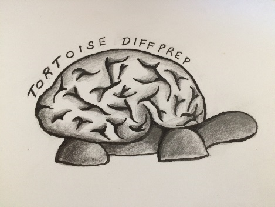
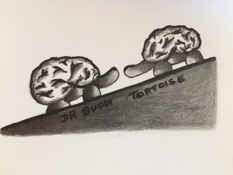
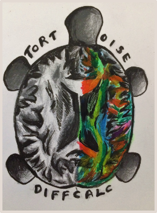

INTRODUCTION¶
  {kind=link}
{kind=link}
{kind=link}
TORTOISE is comprised of the following tools:
- DIFFPREP [1]- Distortion and motion correction module: Link text Command Line and Link text GUI
- DR-BUDDI [2] - EPI distortion correction module, run after DIFFPREP processing and if 2 or 4 opposite phase encode direction data present
- DIFFCALC [3]- Tensor fitting and post processing correction module
In its newest form, DIFFPREP and DR-BUDDI modules have been revived rom TORTOISE 2.5.1 and repackaged. DIFFPREP is primarily used in importing raw images, performing motion+eddy and EPI distortion corrections, as well as reorientation to a template space (if provided). Importantly, DIFFPREP has now been re-designed to run fully in C++ and does not require an IDL license or VM (yay!)– it is even executable from the command line. Some of the new features incorporated into the new DIFFPREP (and few in common with DR-BUDDI are as follows):
- Batch capability for import and processing the data
- Raw images converted to NIFTI format
- No IDL license requirement
- Gibbs ringing artifact removal
- Data denoising
- Improved image-based EPI distortion algorithm
- A detailed log of import and processing procedures